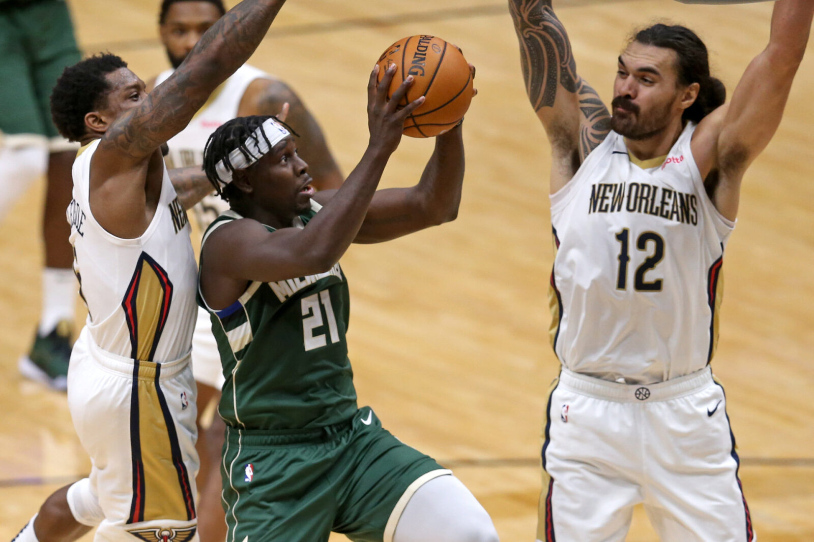
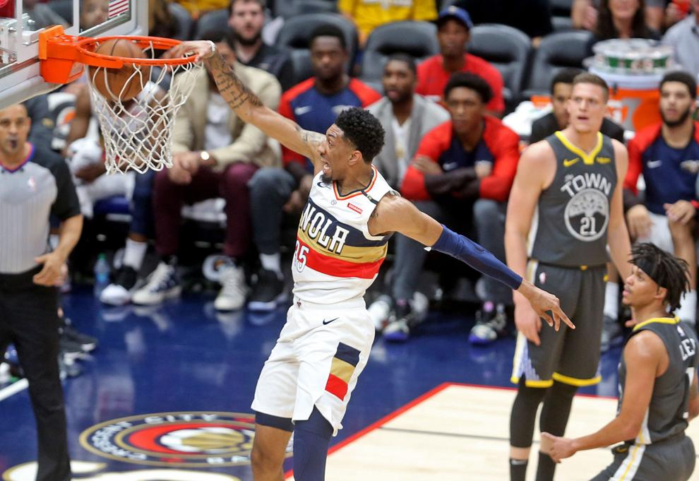

Fire David Griffin
.png)
Sean Carroll illustation
Giannis Antetokounmpo has just won his first NBA championship. It comes in his eighth year in the league and after plenty of failed attempts.
After rising to an All-NBA level, there were the Jason Kidd years, then there was the Eastern Conference Finals loss to Kawhi Leonard, then the Semifinal loss to the Miami Heat in the bubble and now finally a victory over the Phoenix Suns.
In the 2018-19 season, Giannis’ Milwaukee Bucks tallied 60 wins, the most for any Bucks team without Kareem Abdul-Jabbar. Imagine if Giannis turned around and celebrated after 60 wins, saying he had reached the NBA’s mountaintop, we’d all stand around scratching our heads.
That’s the vibe I get when I read Jake Fischer’s (formerly Sports Illustrated) piece on David Griffin in August 2019. He makes it seem like Griffin is the lord and saviour for the New Orleans Pelicans, swooping in to save the damsel in distress and win another championship.
In the piece, he reflects on Griffin’s time as the Cleveland Cavaliers’ top decision-maker. Griffin remembers being “miserable” during his Cavs stint with the one-year contracts and constant pressure from LeBron James to compete every season.
The article also details Griffin’s wife, Meredith Hale-Griffin’s two miscarriages and David’s own battle with cancer.
It’s touching shit, really.
When Giannis hears the final siren in Game 6, spreads out on a courtside seat and puts a towel over his crying eyes. We all know how much it means to him, how many failed attempts he had before he ended up winning. We were even guilty of imagining what it might be like for him to change cities, but he stuck with Milwaukee and won it the "hard way".
Compare that to Griffin. He never explicitly says that he has it in the bag, but he must have understood Fischer’s angle for the piece. Does he really want a writer talking about how he’s on his way to rebuilding New Orleans before he even has?
As Fischer goes on to write about the Cleveland situation: “Manoeuvring the league’s most expensive cap sheet was nothing short of daunting. Dan Gilbert loomed. Griffin’s misery creeped (sic) on top of the stress. ‘We won despite our culture to a huge degree. And I knew it. I knew what we weren’t doing,’ he says. ‘There were so many things during that period of time that I wanted to do differently’.”
· · ·
Fast forward nearly two years since that article was published and we have a much better handle of what a David Griffin team looks like. If this is the brilliant vision that Griffin had for this team when he inherited it, then I’m dumbfounded.
All that time under the pressure of LeBron’s one-year extensions and Gilbert’s tax concerns were in the past. This was an in vogue, progressive team made up of burgeoning talent, future assets out the wahoo and a superstar in Zion Williamson.
This is Griffin’s opportunity to do it “differently”.
When looking for a new head coach to replace Stan Van Gundy (more on that later), Griffin thought he had his guy in Jacque Vaughn. Vaughn had experience as a head coach, spent time as an assistant in winning situations and looked ready to step off the bench and into the number one role.
What better role than in New Orleans?
“Brooklyn assistant Jacque Vaughn [has removed] his name from consideration for New Orleans’ vacancy. And while the appeal of keeping one’s kids in the same location plays a factor in many NBA parents’ career planning, league sources told [Bleacher Report] it was Vaughn’s negotiations with Griffin that derailed the Nets coach from joining the Pelicans,” Jake Fischer, Bleacher Report writes.
“In those talks, which included a dinner in Chicago, Griffin previewed the same level of influence he has utilised throughout the executive’s tenure in New Orleans, where members of Van Gundy’s coaching staff and Alvin Gentry’s before his often mentioned Griffin’s preferred involvement in areas such as minutes, rotations and skill development, primarily for the players he has drafted since 2019.
“With Vaughn, sources said, Griffin had specific ideas to fill out the coach’s entire assistant group, envisioning Bucks assistant Charles Lee as the associate head coach, plus a starting backcourt of Nickeil Alexander-Walker and Kira Lewis.”
The report adds that “[Griffin] wants to have some level of involvement in every decision” according to one Pelicans voice.
I won’t say it specifically, but it sounds a bit like a word that rhymes with ‘bicromanaging’. But that’s alright, it’s an isolated incident, isn’t it?
If you direct your attention back to this past trade deadline, J.J. Reddick had some choice words to say on The Old Man & the Three podcast: “I don’t think you’re going to get honesty from that front office, objectively speaking. That’s not an opinion, I just don’t think you’re gonna get that. I don’t think what happened with me is necessarily an isolated incident. I think front offices around the league operate in their best interest. I get that. I understand that.
“Truthfully... I think I was a little naive thinking I was in Year 15 and I attempted to do things right throughout my career. But in terms of this front office, yeah, it’s not something where I would expect certainly the agents who worked on this with me to ever trust that front office again.”
Yikes.
Stan Van Gundy was recently fired from the Pels and after leaving the organisation, he has had his own share of criticisms about Griffin and the team. When telling Andrew Lopez, ESPN about the firing, he said it wasn’t mutual: “I would say it was joint in this sense: I think you can understand this, I don’t want to be somewhere they don’t want me. And they didn’t want me. I wasn’t at that point going to fight to try to stay there.
“When I left Detroit, my owner there — who I really liked — Tom Gores, also said it was a mutual decision. I said yeah, ‘Tom asked me to leave so I left.’ I guess that’s mutual.”
All of these criticisms of Griffin haven’t had anything to do with the on-court product, so let’s pivot to that.
Shortly after landing the Pels job, Griffin had one job: trade Anthony Davis.
Making that job much easier, the Pelicans secured the first overall pick in the 2019 NBA Draft, a one-way ticket to selecting Zion Williamson, a player some have pegged as a generational talent.
Anthony Davis wanted out of New Orleans and the LA Lakers were thirsty for a star to join LeBron James. Griffin could’ve traded him anywhere after the 'Thats All Folks' shirt was worn, but let’s pretend that the Lakers were the only viable destination.
In the trade, New Orleans received Lonzo Ball, Brandon Ingram, Josh Hart, the fourth pick in the 2019 draft and three future first-round picks. Griffin turned the fourth pick into eight, 17 and 35 in a trade with the Atlanta Hawks. Those players became Jaxson Hayes, Nickeil Alexander-Walker and Didi Louzada.
Quite the haul for a superstar in their prime, take a victory lap David.
Those LA picks are in 2022, 2023 swap rights and 2024 (with the ability to push it back a year). LeBron is almost in a retirement home and AD hasn’t been healthy in a long time, so I like the odds of those picks being valuable.
Look, I’ve gone and said something nice about Griffin! He nailed this part of his job.
But recent reports indicate that one of the returning pieces in the AD trade, Lonzo Ball, might not remain in New Orleans. The Athletic's Shams Charania reportedthat NOLA is “unlikely to match a significant offer sheet on Ball”.
That haul of three young players drops to two. Hart is also a free agent at the end of this season and who knows where his market will be. Nate Duncan on the Dunc'd On podcast suggested that it might get as high as $10 million per season – would New Orleans match that?
If they let him walk, the AD trade haul then becomes Brandon Ingram, the fourth pick, a 2022 pick likely in the bottom half of the draft and then who knows about ’23 and ’24.
With the recent trade to shed Eric Bledsoe and Steven Adam’s salary, that 2022 pick is now owned by the Memphis Grizzlies (top-ten protected). Davis for Ingram, 2019’s fourth pick and LAL firsts in ‘23 and ‘24.
Jrue Holiday drives against Eric Bledsoe and Steven Adams on 18 December 2020. (Chuck Cook-USA TODAY Sports)
Moving on from the AD trade, something Griffin hasn’t been able to nail is judging whether large human beings are good at basketball or not.
The aforementioned Jaxson Hayes pick at eight in 2019 suggests that Griffin wants to invest in a centre next to Zion. You don’t draft a player that high without hoping their ceiling is as a starter at least, do you?
Operating off that belief (and the fact that Zion has struggled on defence when at the five thus far), Griffin has done a poor job at surrounding him with the right fit at centre. I’m not the biggest fan of Jax Hayes, but I’ll admit he’s still young and could be a contributor in the future.
But to follow up that selection with the Steven Adams trade, parting ways with Denver’s 2023 first-round draft pick to do so, why invest the eighth pick in a centre then? Griffin, instead of sitting still after trading for Adams, extended the big to the tune of two years, $35 million, starting in the 2021-22 season.
I wrote about the trade-and-extend at the time in an article aptly named ‘New Orleans Pelicans: Did they make a Steven Adams-sized mistake?’ My main issue with the trade was the opportunity cost. At the time, Zion had only played 24 games and it was way too small of a sample size (from a rookie, be that) to learn anything of true value.
By trading and extending Adams, Griffin lost the most valuable part of a young team: flexibility. If he wanted to pivot and move away from Adams, he’d have to trade him.
*Clears throat* I told you so.
In a pre-draft trade, Griffin was able to move on from his two worst contracts: Adams and Bledsoe. Eric ‘don’t want to be here’ Bledsoe was collateral from the Jrue trade while the Kiwi was a self-inflicted wound.
Yes, Griffin managed to trade both of the bad salaries in one move, but it cost him the tenth pick and 40th pick in the 2021 draft, netting worse picks in return and the expiring contract that is Jonas Valanciunas.
I’m a fan of the move from Memphis’ point of view because, with the tenth pick (and possibly higher), the Grizzlies can try to add another star to their young core. Memphis has Ja Morant, Jaren Jackson Jr., a collection of young maybes and they’re aggressively trying to get more prospects in the building.
Griffin drafted his young star in the same draft as Ja but decided right now was the best time to compete, pushing for the playoffs and running with his current core. Now he has to move on from a valuable pick to shed salary and give up the opportunity to bolster the young talent on the team.
With Steven Adams on the court, the Pels were slightly better on offence and the team gave up 2.3 more points per 100 possessions according to Cleaning the Glass. While that number wasn’t great, New Orleans gives up points for fun, so it’s not much worse than the team number.
JV played a lot of minutes as the main big for the Grizz this past season and Memphis had the seventh-best defence in 2020-21. But as a ground-bound, drop coverage centre, his regular season success might not translate to playoff wins (see Gobert, Rudy).
I’m not going to knock the JV pickup too hard, when salary dumping, you have to take what you can get and it’s a perfect example of how losing flexibility because of a dumb move earlier in his tenure has come back to haunt him.
If Griffin wanted to see what Zion looks like next to a traditional centre, get someone cheaper. You don’t need to pay Adams $35 million to test a lineup, a minimum player like Robin Lopez would give you a fine facsimile.
Maybe it’s just a misevaluation of talent, which happens to the best of us. Heck, Griffin even had Christian Wood on this exact roster. A season before Wood joined the Detroit Pistons, he had put up 16.9 points with 7.9 rebounds in eight games for the Pels.
Was it too risky to bring him back after only eight games? Wood recently signed a three-year, $41 million deal with the Houston Rockets in the open market and we know how well he has played so far. If you’re wondering, that deal is roughly $4 million less than what Adams makes each season for the next two.
Christian Wood makes a dunk during the game between the Golden State Warriors and New Orleans Pelicans on 9 April 2019. (Michael DeMocker, NOLA.com, The Times-Picayune)
And the second half of that salary dumping trade is Eric Bledsoe, whom the team acquired in the Jrue Holiday trade. Yes, Bledsoe has been haunted by Scary Terry ever since that Boston Celtics series but there’s not much Griff could’ve done here; he needed to match Jrue’s salary somehow.
Jrue was essentially traded for two future Milwaukee first-round picks and the right to swap two additional Milwaukee first-round picks. Just like the Lakers picks, if Giannis just plays basketball, the team will be winning.
Where it gets interesting is at the end of those picks’ lifetime. New Orleans own Milwaukee’s 2026 pick swap rights and 2027 pick unprotected. The Greek Freak will be 32 in 2027 - if he can keep them in the playoffs, this trade looks pretty bad for NOLA since there was no immediate return for the Jrue trade to begin with, all future assets.
But until then, we don’t know. The Bucks just won a title so they’re more than happy with the trade.
A lot of what I’m writing is based around Zion Williamson, and it should be. Every decision the front office makes should be about maximising the team’s best player, possibly the league’s best player soon.
This league is driven by superstars and being able to maximise what these brilliant basketball players do is how you win an NBA championship. Without one of these superstars, there’s no championship, it’s as simple as that.
The Athletic’s Shams Charania, Joe Vardon and William Guillory reported after the season and SVG firing that “certain family members want Williamson on another team”.
San Antonio Spurs fans know all too well what it can be like when a close family member gets in the ear of a player, filling their mind with all kinds of greener pastures and success elsewhere.
As Zion said himself at his end of season press conference:“It’s disappointing. I’d be lying to you if I said anything else. It’s very disappointing. But the best thing we can do is regroup, come together as a team, come together as coaches this offseason, talk and do what we need to do to be better next year. It’s not much to it, we just gotta be better.”
When Griffin sat down with Jake Fischer after the AD trade, to talk about his grandiose plans for New Orleans’ first NBA championship, he was rightly sanguine. The hard work had been done for him, he had been given the keys to a clean cap sheet, a superstar player on his rookie contract and little-to-no pressure.
The worst thing that could happen to him at that time was an earthquake in the middle of Zion’s Summer League debut. But now, two years into Zion’s tenure, there are tremors of an eventual breakup and David Griffin is giving up value to fix his own mistakes.
If Griffin doesn’t act fast, it might not be very long before a new GM takes over and trades a disgruntled Zion for an all-time haul. Griffin was handed a full deck when he came to town, but so far he’s come up empty.